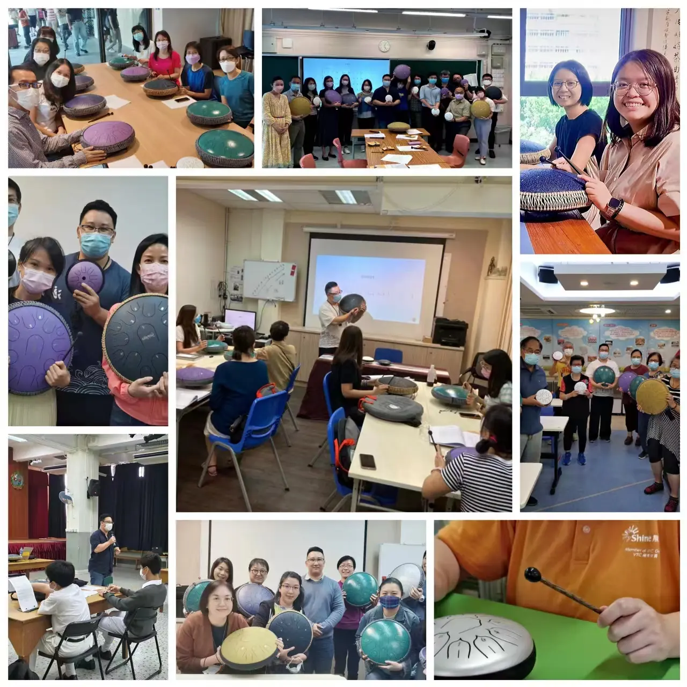

空靈鼓2 分鐘
空靈鼓與手碟：買之前先看發聲結構
網上圖片裏，兩種圓形金屬樂器很容易被放在一起。空靈鼓通常指鋼舌鼓，表面有切割出來的音舌；手碟的音區則由金屬表面的塑形與調音形成，外觀可見不同的凹凸音區。辨認結構，比只看商品名稱清楚。

空靈鼓由音舌振動發聲，入門可以很直接；要把聲音連成音樂，仍需要節拍、回彈、分句與聆聽。課程由少量音與清楚短句開始，再加入旋律和即興。
適合想認識節奏與旋律的成人、學生，以及希望一起做音樂活動的親子或團體。按參與者程度安排輪奏與合作，讓每個人都有聽與做的時間。
已有鋼舌鼓可提供音數、調性或產品資料。想演奏特定歌曲，先確認樂器是否具備需要的音高；空靈鼓與手碟的發聲結構不同。
先同音練回彈，再做兩音交替，最後加入四拍短句。休止時仍保留拍子，聽清聲音的尾巴，避免每一下都急着被下一個音蓋過。
空靈鼓2 分鐘
網上圖片裏，兩種圓形金屬樂器很容易被放在一起。空靈鼓通常指鋼舌鼓，表面有切割出來的音舌；手碟的音區則由金屬表面的塑形與調音形成，外觀可見不同的凹凸音區。辨認結構，比只看商品名稱清楚。
現正招生：2026 年 11 月班。名額以學會網站報名頁為準。
| 班別 | 上課日 | 上課時間 |
|---|---|---|
| 佐敦 G1 | 逢星期一 | 下午 2:00 |
| 佐敦 G2 | 逢星期五 | 下午 2:30 |
| 佐敦 G3 | 逢星期一 | 晚上 7:00 |
9 月 21 日、10 月 1 日及公眾假期不上課；當期學費 HK$1,880，優惠期內 85 折（HK$1,598）。
| 班別 | 日期 | 上課時間 |
|---|---|---|
| 佐敦 E1 | 9 月 3 日至 10 月 29 日，逢星期四 | 上午 11:00 – 12:15 |
| 佐敦 E2 | 9 月 7 日至 11 月 9 日，逢星期一 | 下午 3:15 – 4:30 |
| 佐敦 E3 | 8 月 26 日至 10 月 28 日，逢星期三 | 上午 11:00 – 12:15 |
| 佐敦 E4 | 9 月 15 日至 11 月 3 日，逢星期二 | 晚上 8:30 – 9:45 |
體驗課為初接觸空靈鼓、不知道是否適合自己的朋友而設。張老師會準備簡單的流行曲，零音樂基礎也可以；上完課後，你會懂得簡單的看譜方法和數拍子，至少能演奏一兩首自選的歌曲。
想先聽聽空靈鼓的聲音，見音色示範。
課堂上可借用空靈鼓；張老師建議同學在家準備指定規格的樂器練習，保持進度。規格：魯儒牌鈦金鋼 15 音空靈鼓（D 調），顏色可參考魯儒官方頁面。經學會訂購的優惠價為 HK$1,280（原價 HK$1,880），請在報名時注明；需由老師代訂的，請於開課前 7 天報名。
小鼓、鼓架與桌面支架另有學生訂購價，見空靈鼓配件。
查詢時可提供年齡、已有經驗、現有樂器與可上課時間，也可以說說最想學的一首曲。